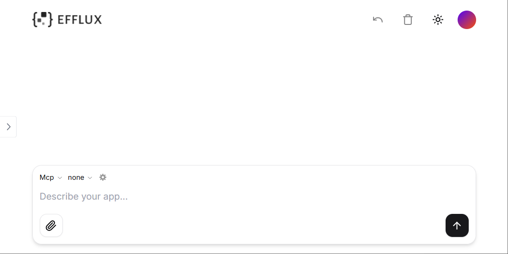

Get Started
Prerequisites
Make sure the following dependencies have been installed:
1. Clone the Repository
In your terminal:
| git clone https://github.com/isoftstone-data-intelligence-ai/efflux-frontend.git
|
2. Install the Dependencies
Enter the repository:
Run the following to install the required dependencies:
3. Set the Environment Variables
Create a .env.local file and set the following:
1
2
3
4
5
6
7
8
9
10
11
12
13
14
15
16
17
18
19
20
21
22
23
24
25
26
27
28
29
30
31
32
33
34
35
36
37
38
39
40
41
42
43
44
45
46 | # Get your API key here - https://e2b.dev/
E2B_API_KEY="your-e2b-api-key"
# Get your Azure API key here https://learn.microsoft.com/en-us/azure/ai-services/openai/how-to/create-resource?tabs=portal
AZURE_API_KEY="your-azure-api-key"
# API URL
NEXT_PUBLIC_API_URL="your-backend-service-url"
# OpenAI API Key
OPENAI_API_KEY=
# Other providers
ANTHROPIC_API_KEY=
GROQ_API_KEY=
FIREWORKS_API_KEY=
TOGETHER_API_KEY=
GOOGLE_AI_API_KEY=
GOOGLE_VERTEX_CREDENTIALS=
MISTRAL_API_KEY=
XAI_API_KEY=
### Optional env vars
# Domain of the site
NEXT_PUBLIC_SITE_URL=
# Disabling API key and base URL input in the chat
NEXT_PUBLIC_NO_API_KEY_INPUT=
NEXT_PUBLIC_NO_BASE_URL_INPUT=
# Rate limit
RATE_LIMIT_MAX_REQUESTS=
RATE_LIMIT_WINDOW=
# Vercel/Upstash KV (short URLs, rate limiting)
KV_REST_API_URL=
KV_REST_API_TOKEN=
# Supabase (auth)
SUPABASE_URL=
SUPABASE_ANON_KEY=
# PostHog (analytics)
NEXT_PUBLIC_POSTHOG_KEY=
NEXT_PUBLIC_POSTHOG_HOST=
|
4. Start the Development Server
Then you can access your local efflux at http://localhost:3000. The landing page looks like the following:

What's Next?